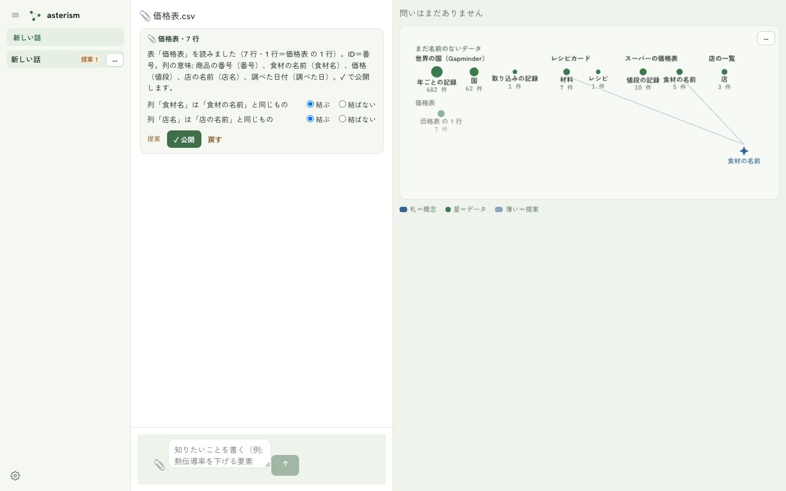

つながり — 別々のデータを共通の値でつなぐ仕組み v0.3.0 (2026-06-13) で追加
つながりの画面はありません。ここでは、残っている仕組みだけを説明します。
つながりとは
別々のデータに同じ値（試料名・組成など）があると、それを手がかりに両方をまたいで質問できるようになります。これが「つながり」です。作るときに AI は使いません。実際の値どうしを機械的に突き合わせて、共通の値を見つけます。
つなぎ方は 1 つに限りません。同じデータどうしでも、別の手がかり（組成でつなぐ、著者でつなぐ、など）で新しいつながりを増やせます。
表を添えると自動で結ばれる
表を クリップで添えると、返事に「列の結びつき」が出ます（「列「price」は「価格」と同じもの」など）。「結ぶ」を選んだ列どうしは、値が重なっていれば、承認で公開したときに自動で結ばれます。手作業は要りません。
- 名前が既存の用語と完全に一致した関係は、公開のあと、機械の手番として同じチャットに出ます。「承認」で確定し、「取り消す」で見送ります
- 結ばれた結果は、図のつながりの点に出ます。押すと「つながり」の 1 枚が開きます（参加している種類が並びます）
- 値の重なりを探すのは機械で、AI は使いません。AI に渡すのは列の見出しと型だけで、値は渡しません


同じものは 1 つのページ v0.46.0 (2026-09-29) で追加
結ばれた列が指す対象は、データセットが違っても 1 つにまとまります。同じ対象のページが 2 つできることはありません。まとまったものは、チャットで「…を見せて」と書くと、つながっているデータセットの記録が表で返ります（見る）。
同じ値とみなす基準（正規化）
表記のゆれをどこまで同じ値として扱うかの基準です。画面で選ぶ場所はなく、仕組みとして残っています（サーバの API から指定します）。
| 基準 | 内容 |
|---|---|
| そのまま一致 | 表記が完全に同じものだけをつなぐ |
| 大文字・小文字を無視 | FeO と feo を同じとみなす |
| 空白の違いを無視 | 前後・連続する空白の違いを無視する |
| 全角・半角を揃える | 全角・半角や互換文字の違いを無視する |
| ゆるく一致 | 大文字小文字・空白・全角半角をまとめて無視する |
| 組成式として揃える | 添字や空白の違いを吸収する（元素の並び順は区別） |
| 組成式＋元素順も揃える | 元素の並び順が違っても同じ組成として扱う |
| カスタム | 手順（プリミティブ）を自分で組み合わせて基準を作る |
組成には大文字・小文字を無視する基準は使えません（Co と CO は別の元素なので、同じ値とみなすと間違った一致になります）。
追加の一致条件 v0.5.0 (2026-06-15) で追加
つなぐ概念だけでなく、複数の条件がすべて一致したときだけつなぐ、という指定も仕組みとしてできます（これも API から指定します）。たとえば「組成」かつ「結晶系」が両方一致したときだけつなぐ、といった使い方です。
できたつながりの画面
作ったつながりの画面では、次のことが確認できます。
- 両方に出てくる値の一致数と、つながっているデータの件数
- またいで使える道具（この値は何データセットが報告しているか、をその場で調べられます。一致した値どうしの照合そのものは AI を使いません。道具パネルから新しい道具を作るときは AI に下書きさせることもできます）
- 「最新のデータで作り直す」ボタン（つないだあとにデータを追記したときに押します。公開されていないデータは、作り直しても入りません）
- 「このつながりを削除」ボタン v0.36.0 (2026-09-02) で追加（確認のうえで、つながりそのもの＝結合のグラフと設定を消します。元のデータセットには触れないので、同じ設定でいつでも作り直せます）
追加の一致条件 v0.5.0 (2026-06-15) で追加
つなぐ概念だけでなく、複数の条件がすべて一致したときだけつなぐ、という指定も仕組みとしてできます（これも API から指定します）。たとえば「組成」かつ「結晶系」が両方一致したときだけつなぐ、といった使い方です。
関連
- データに質問する流れは ask.md を参照してください。
- 項目名や用語を揃える話は vocab-and-grounding.mdを参照してください。